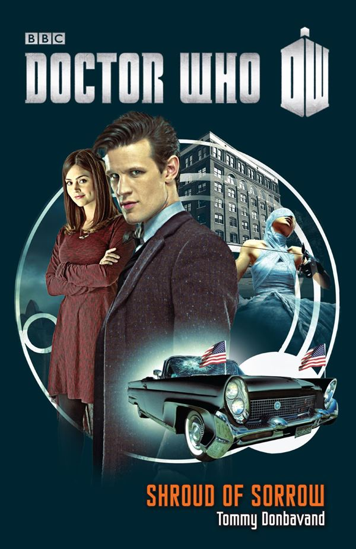

|
Shroud of Sorrow
|
BASIC PLOT DOCTOR We also see memory flashes of all ten previous Doctors. COMPANIONS We see memory flashes of Susan (page 220), Jamie and Zoe (page 221), Jo and the Brigadier (page 222), Sarah Jane Smith (page 222), Nyssa and Tegan (page 223), Peri (page 224), Grace (page 224), Rose and Captain Jack (page 224), River Song and Amy (page 225), and Benton, Liz Shaw, Mike Yates and Jo Grant (page 227). MATERIALISATION CIRCUIT Pg 23 Parkland Memorial Hospital, Dallas, November 1963. Pg 235 The TARDIS returns to Venofax, same timezone as before. Pg 240 Inside the Shroud. In an underground theatre on Semtis, 1963. PREPARATORY READING CONTINUITY REFERENCES Pg 9 "His torch swept across the wooden gates of Foreman's scrapyard" Just as it does in An Unearthly Child. "There had been rumours of teenagers hanging around the gates at all hours of the day and night" Susan Foreman. Pg 14 "Come on, sexy!" The Doctor called the TARDIS "sexy" in The Doctor's Wife. But see Continuity Cock-Ups. Pg 15 "He kept a chain made from a dwarf star alloy on hand for really big jobs" Warriors' Gate. Pg 16 "'Equipment can be replaced,' said the Doctor. people can't. Well, there is one planet where they can, but I'm not allowed back there Long story. Tried to get a refund on a shop-soiled Australian flight attendant without her permission." Frontios. But see Continuity Cock-Ups. Pg 17 "The Doctor whipped out his sonic screwdriver and fired a blast over his shoulder." Fury from the Deep et al. Pg 19 "Sarcasm is the lowest form of wit, you know - although I once met a Sontaran stand-up comedian who could challenge it for the record." The Sontaans first appeared in The Time Warrior. Pg 23 "The TARDIS's tears are shorting out the helmic regulator." The Ark in Space. "Then, faintly at first, a face began to form out of random particles in the centre of the screen. A face he hadn't seen for a very a long time. 'Astrid!'" Voyage of the Damned. Pg 25 "Take Isambard Kingdom Brunel, for example." Reckless Engineering. Pg 47 "And she wasn't made of plastic? Had a hand that flipped open with a gun inside?" Autons (Spearhead from Space, etc). Pg 49 "He leapt up and kissed the air on either side of the confsed doctor's face." Just like he does in The Lodger. Pg 66 "The baby gave a gurgle. 'Oh, all right,' said the Doctor. 'There's no need to use language like that.'" The Dctor speaks baby, as established in Closing Time. Pg 68 "Astrid Peth. A waitress who pushed a megalomaniac into a warpo engine with a forklift truck so I could stop the Titanic from crashing into Buckingham Palace on Christmas Day." Voyage of Damned. Pg 70 "It's similar to how my psychic paper works" The End of the World et al. Pg 71 "Although the aliens that are from Mars are actually green, which is interesting. But they're not little. And they hissssss a lot when they speak." "The crashed spaceship in Roswell. Area 51, I think they call it." Seen in Dreamland. Pg 74 "'Helmic regulator,' corrected the Doctor." The Ark in Space. Pg 91 "'I've been called many names,' said the newcomer as he bent to tickle Tess under the chin. 'Theta Sigma, the Oncoming Storm and, for one rather embarrassing weekend, Mable.'" The Armageddon Factor, Love and War/The Parting of the Ways, unknown. Pg 92 "You want to stay clear of those unless you fancy being chased across Metebelis Three by giant sticks of celery." Planet of the Spiders, the fifth Doctor. Pg 94 "'My dog can talk!' The Doctor nodded. 'I had a dog that could do that once.'" K9, The Invisible Enemy et al. Pg 109 "Of course, it had gone downhill by the time I went to visit Peter Streete there after he'd gone mad designing the Globe theatre." The Shakespeare Code. Pg 110 "'Are you saying you knew President Kennedy?' 'Yes, well - no. Sort of. I met him back in the 1950's, just before I accidentally got engaged to Marilyn Monroe at Frank Sinatra's house." A Christmas Carol (although Kennedy isn't mentioned in that story). Pg 128 "'The name's Lethbridge-Stewart,' announced the newcomer." The Doctor pretends to be the Brigadier (The Web of Fear et al). Pgs 141-142 "All I have to do is find the right frequency to reverse the polarity of the neutron flow..." The Sea Devils. Pg 142 "'We'll use a vehicle,' explained the Doctor. 'The metal frame will act like a farday cage, absorbing all the zappy bits and keeping the gooey stuff inside safe from harm.'" This is exactly what happens in Planet of the Dead. Pg 147 "'I've been to Pompeii,' the Doctor said. 'Both on the big day itself, and again years later.'" The Fires of Pompeii, The Fires of Vulcan. Pg 179 "'I haven't played this for years!' cried the Doctor, tooting out a rendition of 'Three Blind Mice' on his recorder." Power of the Daleks et al. Pg 203 The psychic paper makes an appearance (The End of the World et al). Pg 205 "Only last week, he'd promised her a tour of the aquarium, but had been forced to give up on it after opening doors to the kitchen, the library and two separate rooms filled with what appeared to be boxes of multicoloured scarves." The fourth Doctor. This sequence is similar to the opening of The Masque of Mandragora. Pg 208 "Above it, in what appeared to be felt-tip pen, was written 'Fast Return'. [...] 'I haven't used it in a long time now,' said the Doctor. 'Not since it got stuck and tried to drag me back through the beginning of the universe.'" The Edge of Destruction (complete with felt-tip writing). Pg 210 "'What about Fun Gun?' said Clara as she fastened the buckle ont he second strap. 'No!' cried the Doctor." The Happiness Patrol's guns were called fun guns, although it's unclear if this is a deliberate reference. Pg 211 "So back in Britain, it's just about teatime on Saturday 3 November 1963 - and the fun is about to start!" Indeed it is. This is a meta-reference to the original broadcast of An Unearthly Child. Pg 220 "This will be as easy as falling off a mushroom on Mechanus." The Chase. "He was still on Earth, but now in the 22nd century. He wrapped an arm around his ganddaughter, Susan, and gave her a hug." We get a memory sequence from the end of The Dalek Invasion of Earth. Pg 221 "'There must be something we can do!' cried Zoe. 'No,' sighed the Doctor. 'Not this time.' With a heavy heart, he turned to the kilted figure of Jamie McCrimmon. 'Well, goodbye, Jamie.'" We get a memory sequence from the end of The War Games. Pg 222 "Champagne corks popped for two, very different reasons. Not only was Jo Grant engaged to be married to Clifford Jones, but the Wholeweal environmental commune had been upgraded to a proprity one research complex." We get a memory sequence from the end of The Green Death. "He was in the secondary control room. Sarah Jane Smith entered, carrying a bag and a pot plant." We get a memory sequence from the end of The Hand of Fear. Pg 223 "'Please hurry, Doctor!' begged Nyssa. 'We must get Adric off the freighter.'" We get a memory sequence from the end of Earthshock. Pgs 223-224 He watched as the warrior king, Yrcanos burst into the medical chamber to face a shaven-headed Peri" We get a memory sequence from the end of Mindwarp. Pg 224 "'I suppose it's time I should be going,' said Mel." We get a memory sequence from the end of Dragonfire. "'How can you miss me?' exclaimed the Doctor. 'I'm easy to find. I'm the guy with two hearts, remember?'" We get a memory sequence from the end of the telemovie. "Captain Jack Harkness kissed Rose goodbye." We get a memory sequence from the end of The Parting of the Ways. Pg 225 "Raising the forks, she lifted Max Capricorn's life-support unit clear off the ground and drove for the guard rail surrounding the gantry above the engines." We get a memory sequence from the end of Voyage of the Damned. "That gravestone - Rory's - there's room for one more name, isn't there?" We get a memory sequence from the end of The Angels Take Manhattan. Pg 227 "John Benton saluted the coffin, then turned to the UNIT soldiers standing beside the grave. 'Rifle party!' he commanded. 'Five rounds rapid.'" The Daemons. Pg 228 "He stood and read the name carved into the marble: Brigadier Alistar Gordon Lethbridge-Stewart." We get a memory flash to the Brigadier's funeral, following up on The Wedding of River Song. Pg 229 "She smiled, then slammed her hand down onto the Fast Return switch." The Edge of Destruction. Pg 235 "'The Cloister Bell!' announced the Doctor. 'We're back to our last destination...'" Logopolis. Pg 238 "Now then sexy,' he crooned to the time rotor." The Doctor's Wife. But see Continuity Cock-Ups. OLD FRIENDS AND OLD ENEMIES NEW FRIENDS AND NEW ENEMIES Bev Sanford appears in the closing chapter but does not meet anyone else in the novel.
CONTINUITY COCK-UPS PLUGGING THE HOLES [Fan-wank theorizing of how to fix continuity cock-ups] FEATURED ALIEN RACES Pg 169 An alien bear. Pg 174 The human inhabitants of Semtis (but see Continuity Cock-Ups). FEATURED LOCATIONS Pgs 16/20 The SS Howard Carter, Venofax, time unknown. Pg 26 Dallas, Texas, November 1963. Pg 57 The Doctor travels inside Ben's mind to 20 August 1929. Pg 144 Inside the Shroud, 1963. Pg 174 Semtis, 1963. Pg 247 Somewhere in the US, 22 October 1962. Pg 251 Station Epsilon, 30 September 3006. IN SUMMARY - Robert Smith? |
|
 |